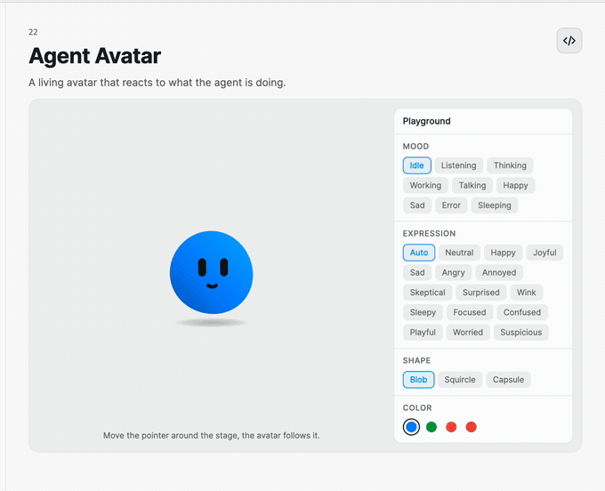
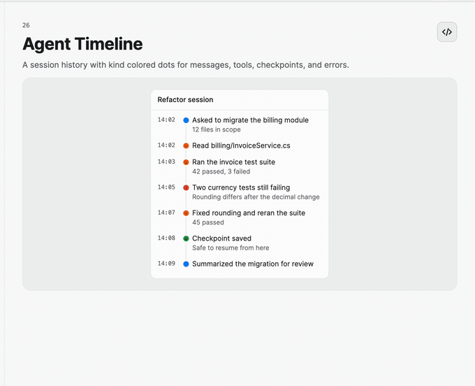
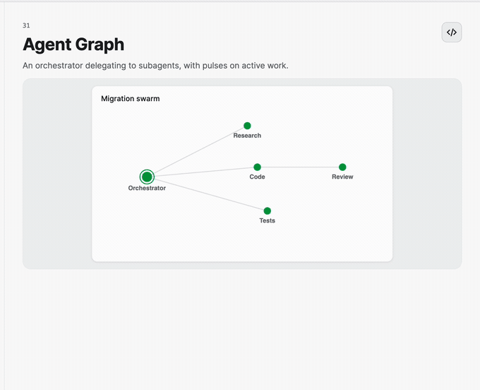

Agent Controls
AIKit includes four levels of agent visualization: identity, a single task, chronological session history, and a graph of collaborating agents.
Identity and task state
<StackPanel Orientation="Horizontal" Spacing="12">
<nova:AgentAvatar Width="72"
Height="72"
Mood="Working"
Expression="Neutral"
BodyShape="Squircle" />
<nova:AgentTaskRow Title="Verify vendor records"
Meta="12 suppliers"
ProgressText="8"
Status="Running"
ItemsSource="{Binding TaskDetails}" />
</StackPanel>
AgentAvatar can track the pointer and animate mood and expression changes. AgentTaskRow covers pending, running, completed, failed, and cancelled states, with an expandable detail source.

Session timeline
<nova:AgentTimeline Header="Refactor session"
ItemsSource="{Binding Timeline}" />
Supply TimelineEntry items categorized by TimelineEntryKind. The timeline highlights the last entry and constrains long sessions with ItemsMaxHeight.

Multi-agent graph
<nova:MultiAgentGraph NodesSource="{Binding Agents}"
LinksSource="{Binding Delegations}"
IsAnimationEnabled="True" />
Use AgentNode and AgentLink objects with stable identities. Running nodes and active links can pulse, while completed, failed, and cancelled states use semantic status colors. Set AccessibleName to describe the graph's purpose.
